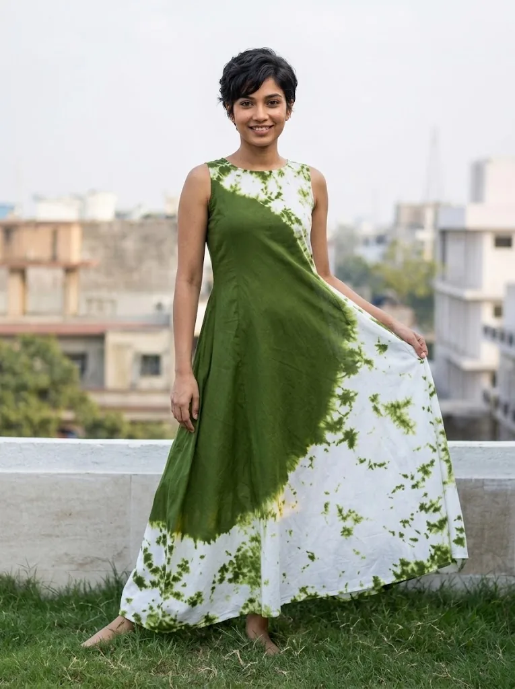
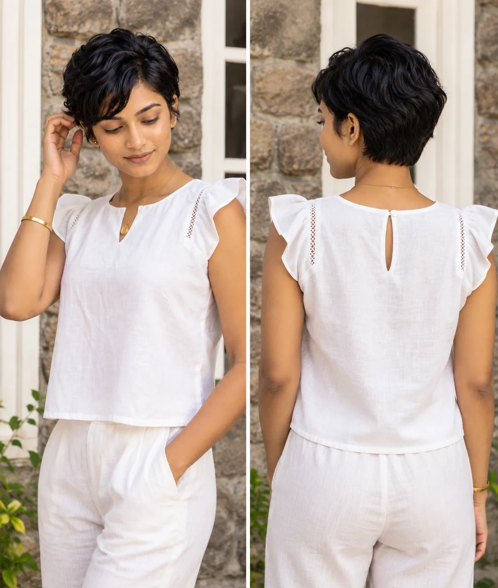
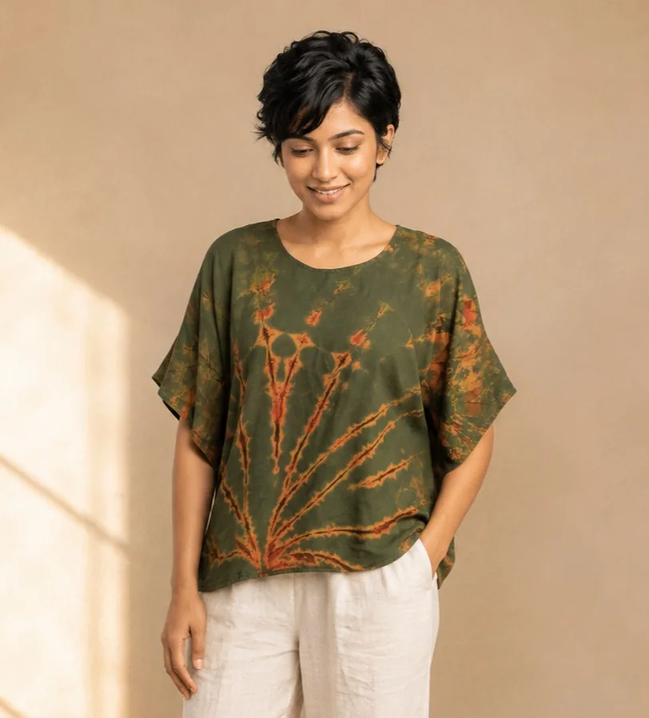
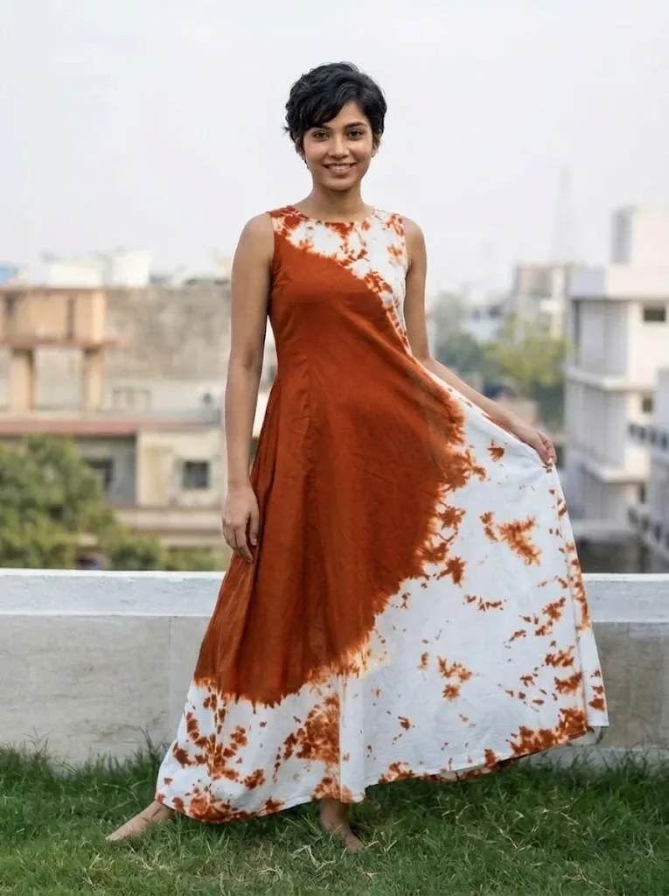

Slow fashion in pure linen, made by hand in Sri Lanka.
Chamathkara Lankan Fashion is a small Colombo studio. We don't mass-produce. Each piece is cut, dyed and sewn by hand, a few at a time.


Pure linen that softens with wear
Every piece starts with pure, unbleached linen that gets softer the more you wear it. We use 100% pure handloom and linen, chosen to breathe in warm island weather.

Painted by hand, one piece at a time
Our batik follows the wax-resist method handed down through generations of Sri Lankan craftspeople. Every flower and line is painted by hand, so no two pieces are exactly alike.

Sewn by women who can work from home
We pay fair wages, and our seamstresses, women from the Western and Southern provinces, can work from home. It keeps the craft of dressmaking alive and supports the families behind it.
“We do not merely sew linen; we craft breezy sanctuaries tailored to your personal body harmony.”The founders, Chamathkara Lankan Fashion
Meet our tailors in Colombo
Visits are by appointment, arranged on WhatsApp. See and feel the linen, look at the dye colours, and have your measurements taken in person.